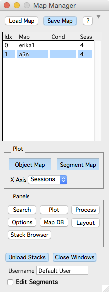

Main panel
The main map manager panel provides an interface to load, save and browse Map Manager maps. Open the main map manager panel using the menu 'MapManager - Map Manager Panel'
Expand the main map manager panel to access the map making interface. Use the disclosure triangle/+ at the top of the window near the help/? button.
Once a map is created and saved, the main map manager panel can be minimized again with the disclosure triangle.
The blue buttons operate on the selected map.

Load Map. Load a map from the hard-drive.
Save Map. Save the selected map.
?. Open map manager documentation in your default web browser.
Plot Group
Object Map. Open a map plot showing the position of spines along dendritic segments vs. session.
Segment Map. Open a map plot showing the segments within each session and the connectivity of segments across sessions.
X-Axis. Choose different X-Axis for Object and Segment map plots. Available X-Axis are:
- Sessions
- Datetime
- Days
- Hours
- Zero Sessions
- Zero Days
- Zero Hours
Date, Days and Hours require your imported stack to have a date specified. The X-Axis options starting with 'Zero' use a session in the map as a zero timepoint. Specify this with 'Zero Session' and 'Rebuild' in the expanded map manager panel.
Panel Group
Each of these buttons will open a different Map Manager panel.
Search. Open the search panel.
Plot. Open the plot panel.
Process. Open the process panel to set image contrast.
Options. Open the options panel.
Map DB. NOT DOCUMENTED YET..
Layout. Open the layout/scale panel.
Stack Browser. Open the stack browser panel.
Miscellaneous
Unload stacks. Unload all stacks in the selected map (from Igor memory).
Close Windows. Close all windows associated with the selected map.
Username. This can be specified in the map manager options panel.
Edit Segments. When checked, all editing in a run plot will edit the persistence of segments (addition, subtraction, and persistent).
Right-click on a map name in the list for a contextual menu.

Show on HDD. Shows the hard-drive folder where the map is saved.
Map stats. Not implemented
Edit map NV. ADVANCED USERS, this shows a map as a text table.
Close map. Close a map, removing it and all associated analysis from Igor memory.